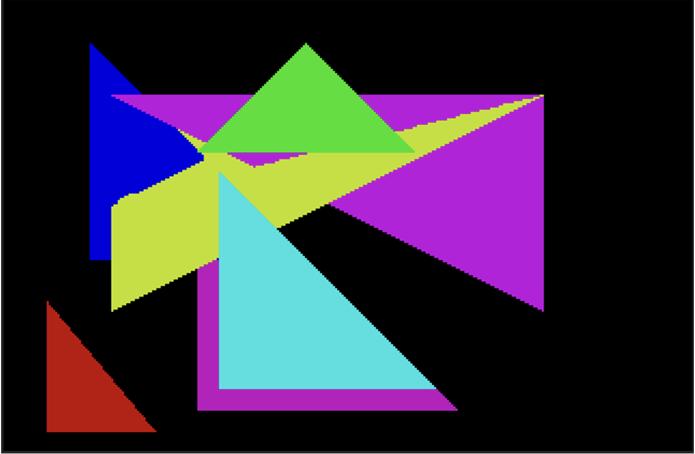
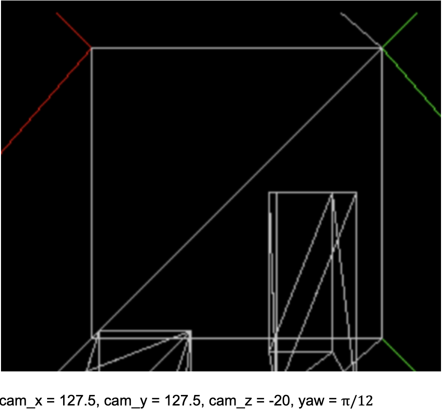
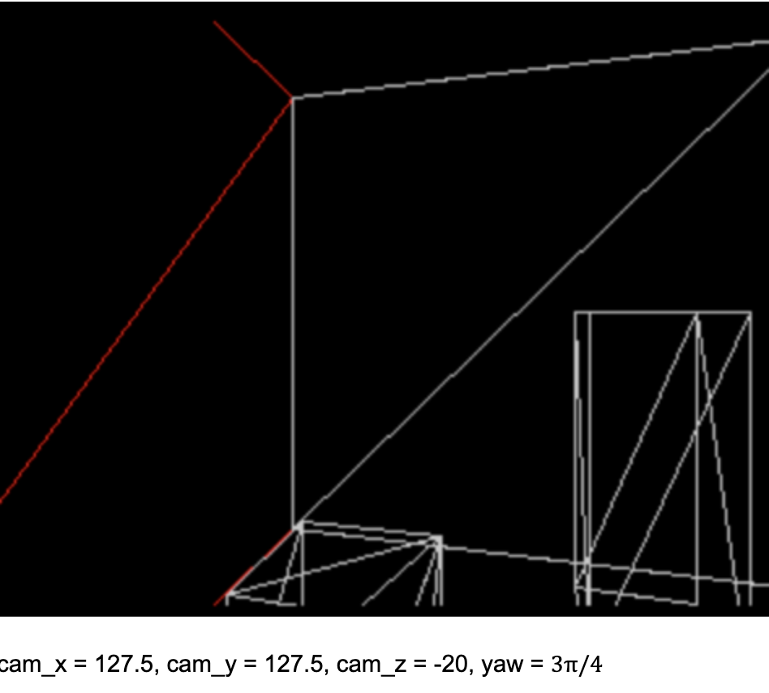
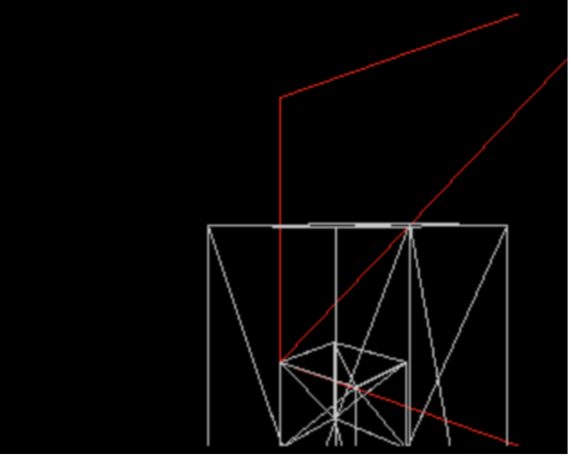
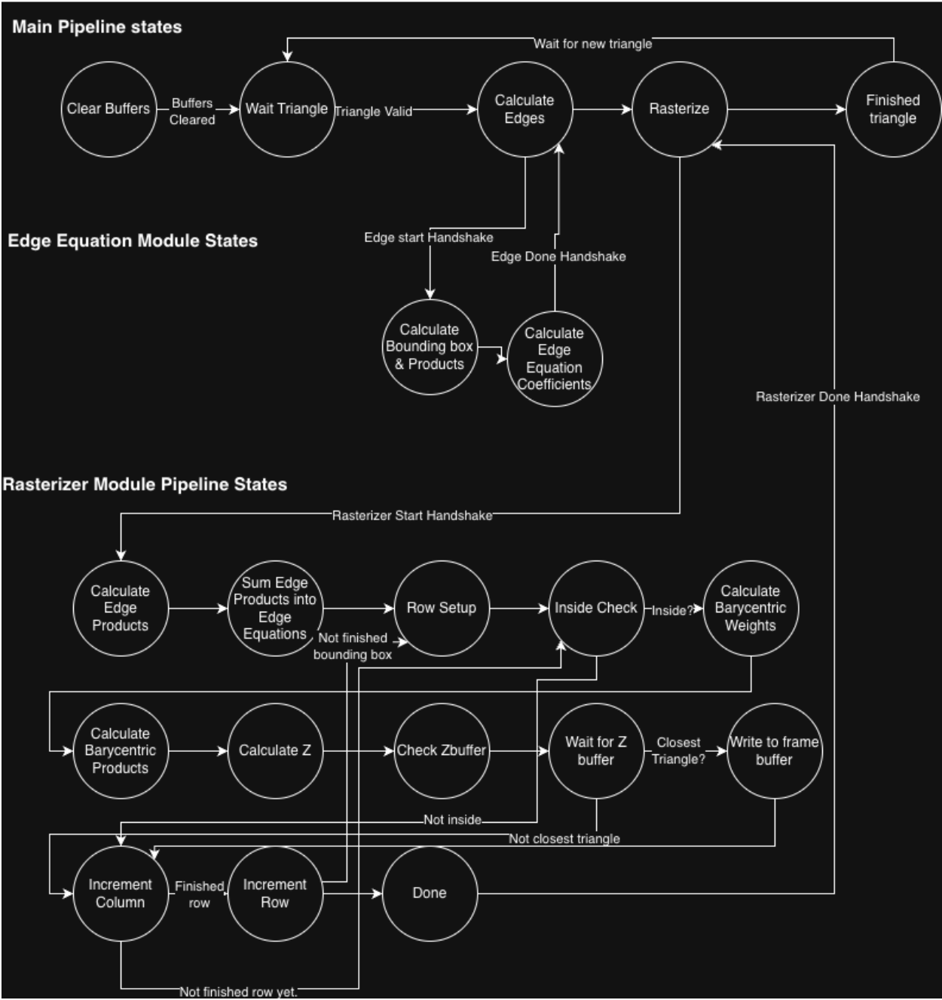

A tiny GPU
Renders textured 3D polygons, implemented in C and SystemVerilog on a Spartan 7 FPGA.





writeup
Renders textured 3D polygons, implemented in C and SystemVerilog on a Spartan 7 FPGA.




